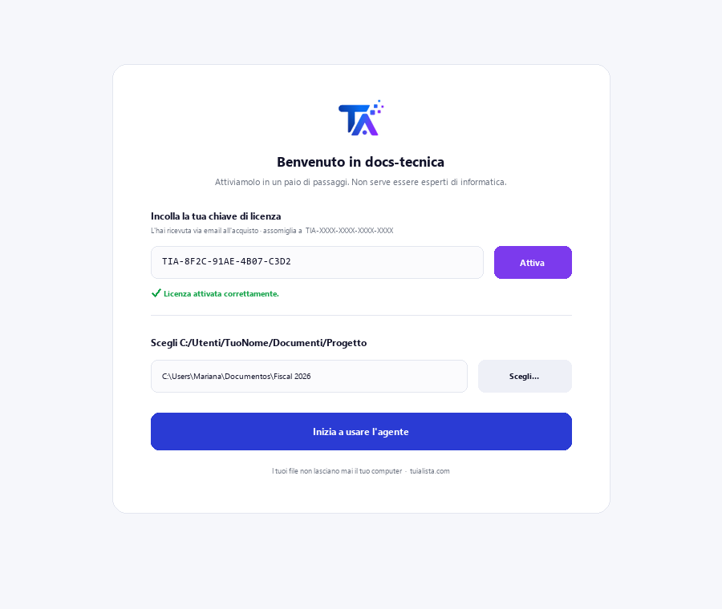
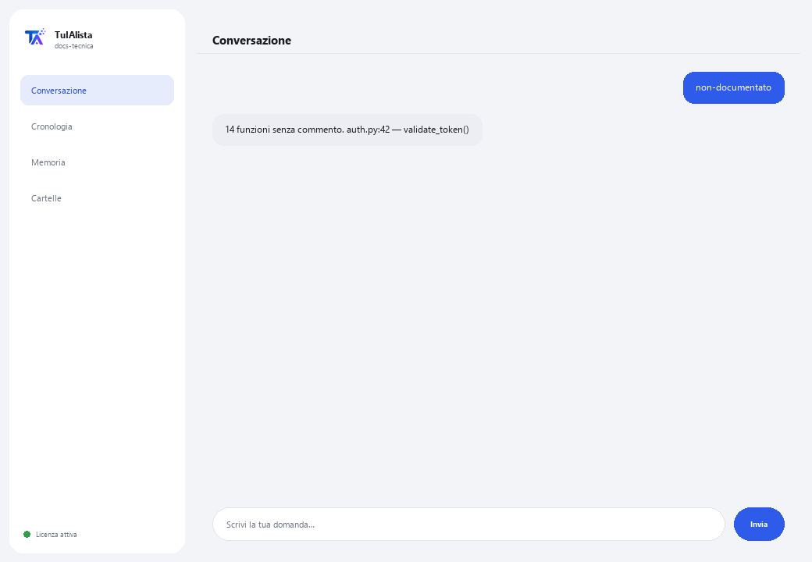

Agente Documentazione Tecnica
Genera e mantiene la documentazione tecnica del tuo software a partire dal tuo codice, senza che il codice lasci il tuo dispositivo.
Cosa risolve e cosa ti serve?
La documentazione rimane sempre indietro: nessuno ha tempo di scrivere il README, spiegare cosa fa ogni file o mantenere una FAQ. Questo agente scansiona il tuo progetto e lo fa per te — supporta Python, JS/TS, Java, C/C++, Go, PHP, Ruby, SQL, e anche RPG (AS/400/IBM i) e COBOL.
- Ti serve: la tua chiave di licenza (TIA-XXXX-XXXX-XXXX-XXXX) e la cartella del progetto. Niente Python né conoscenze tecniche per installarlo (anche se è pensato per team di sviluppo).
- Primo risultato in meno di 5 minuti: installi, attivi, scegli la tua cartella ed esegui readme per il tuo primo README generato.
- Il tuo codice sorgente non lascia mai il tuo computer — la scansione gira in locale.
soporte@tuialista.com o visita tuialista.com/soporte — di solito rispondiamo lo stesso giorno lavorativo.1 Cosa fa questo agente
Gli indichi la cartella del progetto e lui:
- Scansiona il codice ed estrae la sua struttura (funzioni, classi, commenti, import).
- Genera un README professionale del progetto (struttura, componenti, dipendenze, utilizzo).
- Documenta un file specifico nel dettaglio (scopo, funzioni, parametri, note).
- Genera una FAQ tecnica con domande e risposte basate sul codice.
- Rileva funzioni e classi non documentate.
- Costruisce una mappa delle dipendenze tra file (interne ed esterne).
- Risponde a domande libere sul codice.
Supporta molti linguaggi: Python, JavaScript/TypeScript, Java, Kotlin, C/C++, Go, PHP, Ruby, SQL, e anche RPG (AS/400/IBM i) e COBOL, tra gli altri.
2 Installazione (2 minuti)
Per Windows. Non serve internet permanente né caricare nulla sul cloud.
Scarica l'installer da tuialista.com/descargar (agente Documentazione Tecnica) e aprilo. Crea un collegamento sul desktop con il logo — non richiede Python né terminale.
Doppio clic sulla nuova icona. Incolla la tua chiave di licenza (ricevuta via email all'acquisto) e premi Attiva. Vedrai un segno di spunta verde quando è valida.
Seleziona la cartella del progetto e premi Inizia a usare l'agente. La prossima volta si avvia direttamente — ricorda la tua chiave e la tua cartella.

3 Come usarlo
L'agente apre una finestra di chat, come un'app di messaggistica — non è uno schermo nero da programmatore. Scrivi il tuo comando o la tua domanda nella casella di testo in basso, premi Invia (o Invio), e la risposta appare come un messaggio, proprio come in questa immagine reale:

I comandi seguenti sono le parole che puoi scrivere nella stessa casella di testo:
> readmeREADME.md professionale con nome, struttura, componenti principali, come si relazionano, dipendenze e istruzioni d'uso.
> faqDa 8 a 12 domande frequenti tecniche (architettura, come funziona qualcosa, come cambiare funzionalità...) con risposte basate sul tuo codice.
> documentare <file>Documentazione dettagliata di un file: scopo, ogni funzione/procedura (cosa fa, parametri, ritorno), dipendenze e note.
> non-documentatoFunzioni e classi senza commenti né docstring, con file e riga.
> dipendenzeMappa delle dipendenze: per file, quali moduli interni del progetto e quali librerie esterne usa.
> analizzare <file>Struttura rilevata di un file (classi, funzioni con la loro riga, import) senza chiamare l'IA.
> domanda libera?Scrivi qualsiasi domanda in linguaggio naturale, es.: dove viene convalidato il token di sessione?
> esciTermina la sessione (funziona anche exit).
4 Esempi di uso comune
Documentare un nuovo progetto
readme → faq
Capire un file ereditato
analizzare legacy/processo.cbl → documentare legacy/processo.cbl — funziona anche con COBOL o RPG di sistemi AS/400.
Rivedere il debito di documentazione
non-documentato
Orientarti nel codice
come si connette l'applicazione al database?
5 Domande frequenti
Il mio codice viene caricato su internet?
Quali linguaggi supporta?
Devo installare librerie aggiuntive?
Salta cartelle come node_modules?
Modifica il mio codice o scrive file?
Quanto può essere grande il progetto?
Funziona per codice AS/400 (RPG/COBOL)?
In quale lingua risponde?
La documentazione è 100% corretta?
Posso documentare un solo file senza scansionare tutto?
6 Risoluzione dei problemi
Mostra “0 file indicizzati”
Non trova un file con documentare/analizzare
Il README ignora alcuni file
Mostra “Licenza non valida” o chiede di riconnettersi
“Nessun fornitore IA configurato”
Nessuna di queste soluzioni ha risolto il tuo problema? Scrivici direttamente — saremo felici di rivederlo con te.
soporte@tuialista.com o visita tuialista.com/soporte — di solito rispondiamo lo stesso giorno lavorativo.7 Privacy e riservatezza
Il tuo codice sorgente non lascia mai il tuo computer.
- L'agente scansiona il progetto ed estrae la sua struttura in locale, sul tuo stesso dispositivo. Non carica il tuo codice su nessun server.
- Il rilevamento della struttura, il debito di documentazione (non-documentato) e la mappa delle dipendenze vengono calcolati sul tuo dispositivo.
- L'unica cosa che viaggia su internet è: (1) una verifica che la tua licenza sia attiva — che non include il tuo codice —, e (2) quando generi README, FAQ, documenti un file o rispondi a una domanda, vengono inviati frammenti del codice (i più rilevanti) al motore IA per redigere il testo.